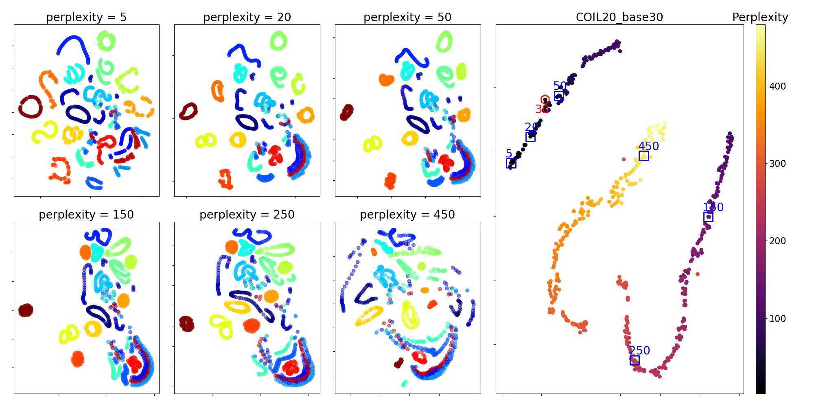

Interactive Machine Learning for Information Visualization
Viet Minh Vu
under the supervision of Prof. Benoı̂t Frénay
17/05/2019
Scope
+ Machine Learning for Information Visualization $\longrightarrow$ Dimensionality Reduction (DR) methods
+ Users interact with the visualization to give their feedbacks
+ Research goal: transform the cognitive feedbacks of the users into constraints for the DR methods
Work plan Overview
What we've done so far
+ Literature review of DR methods with constraints
+ Two works with t-SNE:
- Incorporate fixed-point constraints to t-SNE
- Use the user's pairwise constraints to find the best t-SNE visualization
+Incorporate fixed-point constraints to the probabilistic PCA model
Review of DR methods with constraints
+ Consider the user's feedback as constraints to the system
+ Categorization
- Instance-level
- Group-level
- Feature-level
- Dataset-level
$\rightarrow$ The review scope is too large, the categorization is not sound.
Fixed point constraints with t-SNE
+ Fix the position of some anchor points
+ Attract their neighbors to move towards the fixed points
+ Goal:
- Merge the small clusters
- Split the large cluster
Tuning perplexity with user constraints
+ t-SNE's perplexity is not easy to tune and to find the best one
+ Let the users define their requirements about the visualization in form of pairwise constraints:
- Similar links to connect similar objects
- Dissimilar links to connect dissimilar objects
+ Transform the user defined constraints into a constraint-preserving score
+ Use this score as a criteria to select the best perplexity
We have:
- the user's feedback in form of constraints,
- the relationship between points:
$$q_{ij} = \frac{ ( 1 + || y_i - y_j ||^2 )^{-1} } { \sum_{k \neq l} { ( 1 + ||y_k - y_l||^2 )^{-1} } }.$$
So we could transform the constraints into the scores:
$$S_{\mathcal{M}} = \frac{1}{|\mathcal{M}|} \sum_{(i,j) \in \mathcal{M}} \log q_{ij}.$$
$$S_{\mathcal{C}} = -\frac{1}{|\mathcal{C}|} \sum_{(i,j) \in \mathcal{C}} \log q_{ij}.$$
Interactive PPCA
Initial visualization with the PPCA model.
The user can manipulate the visualization by moving some points.
The result of the interactive model is explainable to the users.
The result of the interactive model is explainable to the users.
Goal: reveal the pattern that is not clear.
+ The embedding in 2D space $\approx$ the latent variables
+ The position of the selected points is modeled directly into the prior distribution of the latent variables
+ Can use the black-box inference toolbox to infer the latent variables
+ Usage: Communicate the result, make some patterns in the visualization easier to understand
Summary the past works
Ongoing works with t-SNE
+ Integrate pairwise constraints instead of fixed-point constraints
+ Find best perplexity for t-SNE by using the user defined pairwise constraints
Two drawbacks of t-SNE
- Within-cluster distances
- Between-clusters distances
are not always well preserved in t-SNE
Do we need a t-SNE embedding in which the cluster sizes and the distances between clusters are well preserved?
Integrating pairwise constraints
$$\sum_{x,x^+,x^-}\left[-\log\left(\frac{e^{f(x)^Tf(x^+)}}{e^{f(x)^Tf(x^+)}+e^{f(x)^Tf(x^-)}}\right)\right]$$
$f(x)$ is a representation of a sample $x$,
$x^+$ and $x^-$ are the corresponding positive and negative samples of $x$
$$\sum_{x, x^+, x^-} \bigg( \big|\big|\; f(x) - f(x^+) \big|\big|^2 - \big|\big|\; f(x) - f(x^-) \big|\big|^2 + margin \bigg)$$

Finding the best perplexity for t-SNE
+ Proposed to use the constraint-preserving score to find the best perplexity
+ Should pre-calculate many t-SNE embeddings corresponding to different perplexity
+ Calculate the constraint scores for all embeddings and search for the perplexity that makes the constraint score maximum
$\rightarrow$ scalability problem
Proposed solution with chain-tSNE
Proposed solution with chain-tSNE
Proposed solution with Bayesian Optimization
- Have calculated some initial embeddings
- What is the next perplexity we should try, ...
- ... in order to maximize the chance to approach the best perplexity?
Always using the constraint preserving scores as a criteria to find the next perplexity
Summary the ongoing works with t-SNE
Future works: probabilistic DR models
- Integrate user's constraints into Gaussian Process models
- Modify the structure of the latent space or the generated samples with Variational Auto-encoder (VAE)
- Understand the latent representation of the probabilistic generative model by visualizing their features in the network
Gaussian Process Latent Variable Model
PPCA $\leftrightarrow$ Dual PPCA $\rightarrow$ GP-LVM
- We would learn a mapping (a function) to map the data from HD to LD (or vice versa)
- There exist many mapping functions
- Gaussian Process allows us to express a distribution over these functions
- and help us to find the most promising function that represent well the data
Why GP-LVM? An example
Data
- Real-time / quantitative polymerase chain reaction (Real-Time PCR) data
- 48 genes obtained from mice
- Data values are measurements of each gene ...
- ... at various stages of development: from the 1-cell stage to the 64-cell stage
Data
Stage labels: ['1', '2', '4', '8', '16', '32 TE', '32 ICM', '64 PE', '64 TE', '64 EPI']
qPCR data:
Actb Ahcy Aqp3 ... Tcf23 Utf1 Tspan8
'1' 0.541050 -1.203007 1.030746 ... 0.942981 1.348892 -1.051999
'32 TE' 0.680832 -1.355306 2.456375 ... 1.064399 1.469397 -0.996275
'2' 1.056038 -1.280447 2.046133 ... 1.211529 1.615421 -0.651393
'64 PE' 0.732331 -1.326911 2.464234 ... 1.071541 1.476485 -0.699586
'16' 0.629333 -1.244308 1.316815 ... 1.114394 1.519017 -0.798985
...
Variational Auto-encoder (VAE)
- The encoder and decoder can be neural networks
- Learn the representation of the data in the latent space
- Has an explicit mapping for the new examples
User's constraints to
- Modify the representation of the latent space
- Control how the new sample is generated
Feature viz. for a generative model
E.g., visualize the latent representation of VAE
Goal: understand the latent structure, the contribution of the latent features to the output generated sample.
Summary the future works
- Integrate user's constraints into Gaussian Process and VAE models
- More general, build a unifying framework that can represent different kinds of user's constraints for the probabilistic DR models
- Visualizing the internal features of a generative model
Focus only on the modeling problem, not inference problem
Other discrete ideas
Uncertainty Visualization: Incorporating an indication of uncertainty into visual representationReferences:
- Visualization of uncertainty vs Uncertainty of the visualization
- Visualising uncertainty in dropout Bayesian neural networks, e.g., the dropout masks and the dropout probability
Other discrete ideas
Enhance the visualization by pre-trained modelsRecap: Some ideas we can work on
Thank you!
Slide configs
Black
(default) -
White
-
League
-
Sky
-
Beige
-
Simple
Serif
-
Blood
-
Night
-
Moon
-
Solarized